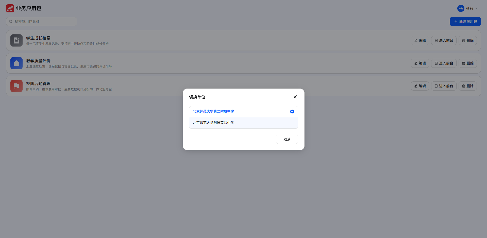
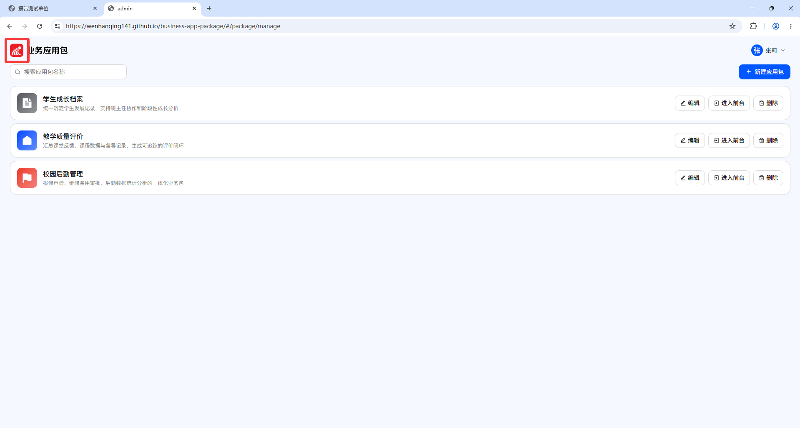
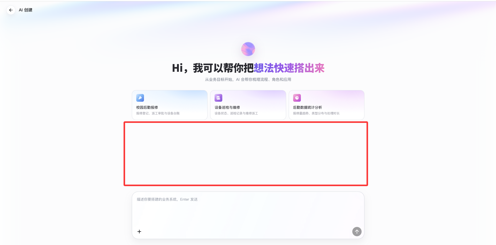
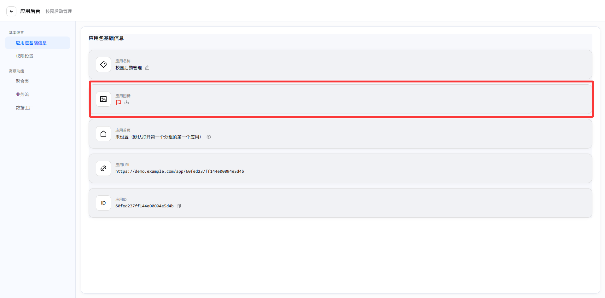
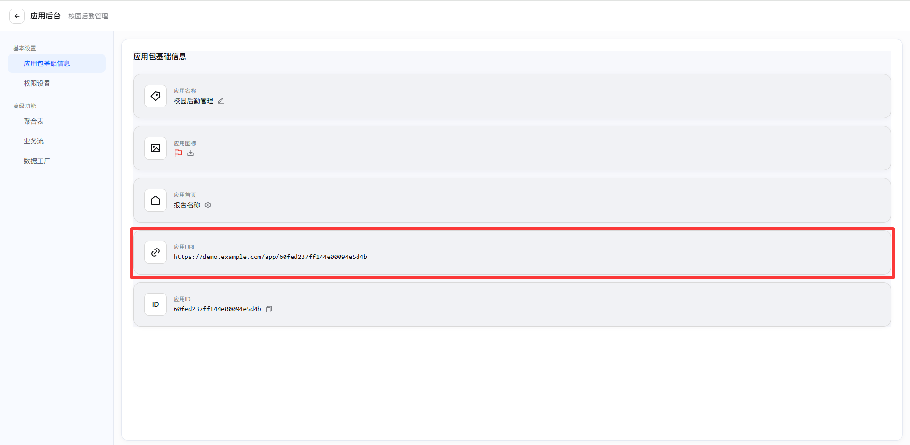
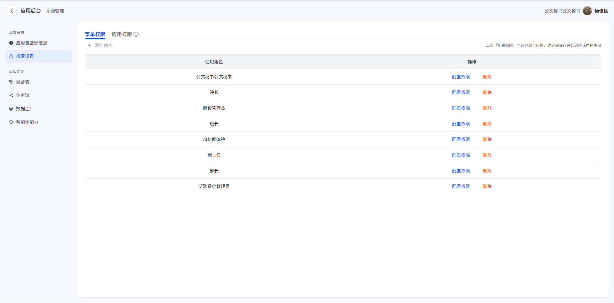
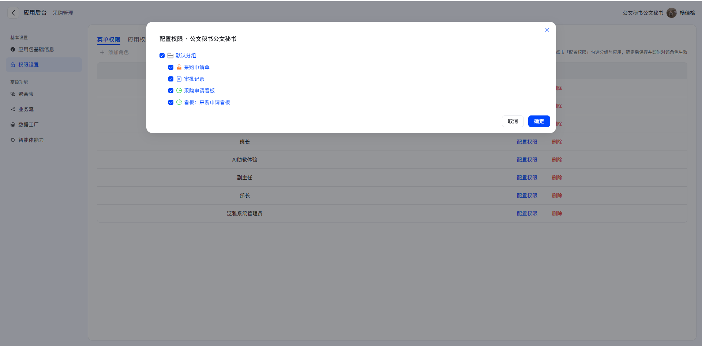
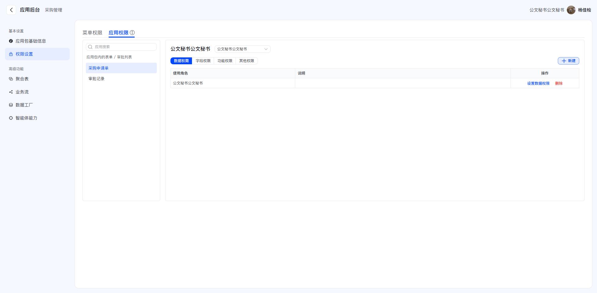
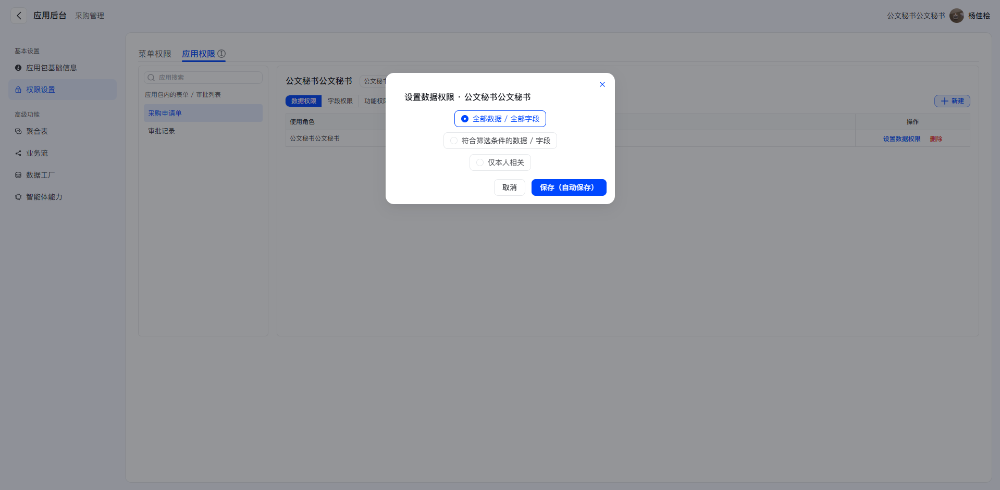

业务应用包设计图问题汇总
共 6 个问题
持续整理中 · 更新于 2026-11-02
01 切换单位弹窗
切换单位的弹窗高度需要固定，目前弹窗太短；移除底部的“取消”按钮，并在弹窗顶部增加一个检索条。
问题截图

02 业务应用包 Logo
业务应用包 Logo 需要去超星化，不能直接使用学习通 Logo，应替换为符合业务应用包自身定位的独立品牌标识。
问题截图

03 对话输入框位置
对话输入框位置偏下，推荐卡片与输入框之间存在大面积无效空白，需要上移输入框并缩短中间留白。
问题截图

04 应用图标上传入口
“应用图标”设置项缺少明确的上传入口，需要增加可识别、可操作的图标上传功能入口。
问题截图

05 应用 URL 一键复制
“应用 URL”缺少一键复制按钮，需要增加复制入口，方便用户快速复制完整链接。
问题截图

06 补充权限设置功能
需要补充完整的“权限设置”部分，包括菜单权限、角色权限配置、应用权限以及数据权限设置。
功能参考截图



